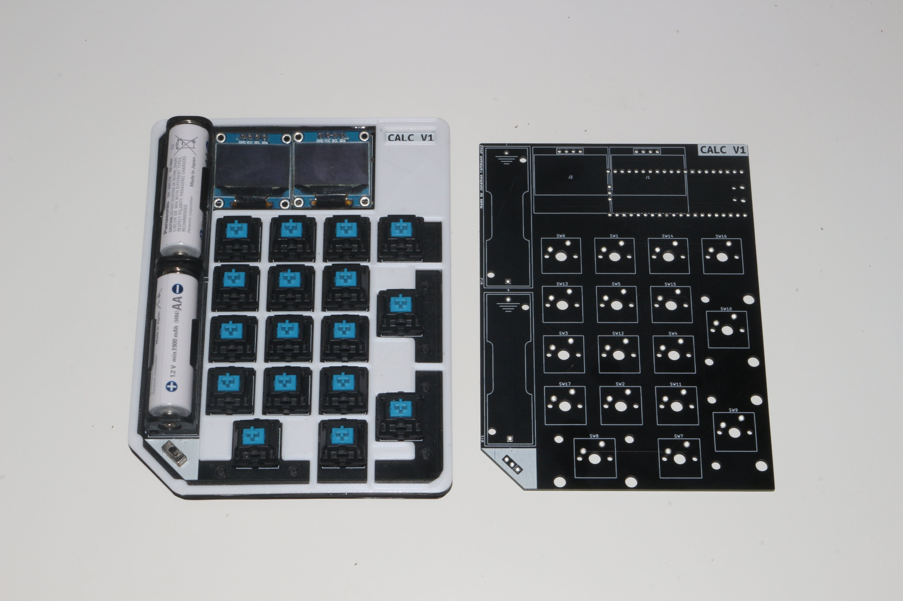

This is my very first project using a custom designed PCB
The calculator is using the RPI Pico (RP2040) as the microcontroller
and two SSD1306 OLED displays, where the left one shows the calculation query and the left one the result.
The switches can be any CherryMX switch. I chose the blue ones for a loud, tactile experience.
The Pico runs a slow micropython script to control everything.
It is also important to note, that this is an old project of mine. This means that there are some non-ideal design choices in the software and hardware. I do NOT recommend to build it in its current state!
This is why I called it the "V1" as I might do a complete hard and software redo in the future.
The design files and software are still open source though ( of course :D ).
Like I said, the calculator runs a circuitpython program, which is kind of slow.
There are also several bad hardware design choices especially in the power-related circuits.
Although the current 3D-printed case does "work", I am not happy with it, as the dimensions are off by a few millimeters and there is some strong glue required.
So this is what I might redo in the V2:
The PCB is entirely made in KiCad, an awesome opensource EDA-program!
Image of the schematic:
You can already see, that there is a lack of any voltage regulation etc. This is planned for Calculator V2.
Both SSD1306 are controlled via I²C. The first display utilizes pins GP3 and GP2 while the second OLED uses GP1 and GP0.
Every switch is connected to its own GPIO pin, which is also suboptimal. I'll probably use a multiplexing solution in the V2.
In this version, the RPi Pico runs a CircuitPython script (Python for µControllers).
The V2 will definitely have a a C++ rewrite, as CircuitPython is very slow and just to much for this application.
I used an aproach, where I basically add every keypress to a list. So 3+4-2 would look like this: [3, "+", 4, "-", 2].
As soon as you press the enter button, the script basically joins the list to a string and runs a symbol "eval" to get the result.
This is then displayed on the dedicated result screen.
It is also possible to use the calculator as an HID-numpad. This can be enabled by changing the "HID" variable to True in line 7.
This will import the necessary functions and overwrites the normally empty "layout" class. Note that this does increase the load times by quite a lot.
I tried to simplify the installation process as much as possible, but please keep in mind that this was written a long time ago and I've since gained
a lot of knowledge.
This means that you technically only need to clone the repo and run "./installer.sh".
It will ask you for the Picos mounting point and then simply copy all necessary files over.